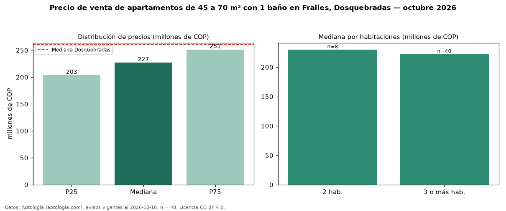

Precio de venta de apartamentos de 45 a 70 m² con 1 baño en Frailes, Dosquebradas — octubre 2026
En Frailes, Dosquebradas, la mediana de precio de venta de apartamentos de 45 a 70 m² con 1 baño es COP 227 millones, según 48 avisos vigentes. Prácticamente coincide con la mediana de los apartamentos de 45 a 70 m² en venta de Frailes (COP 232 millones, n = 96); este segmento reúne el 50 % de esos avisos. Por metro cuadrado, la mediana es COP 4,54 millones/m² (n = 48), 1 % por debajo de los apartamentos de 45 a 70 m² en venta de Frailes (COP 4,56 millones/m²). El área mediana anunciada es 48 m². El segmento con más oferta es el de 3 o más habitaciones (40 avisos, mediana COP 222 millones); pasar de 2 habitaciones a 3 o más habitaciones cambia la mediana −3 %. La administración mediana declarada es COP 204.796 al mes (n = 28). El estrato más frecuente es 3 (75 % de los avisos con estrato). La mediana de todos los apartamentos en venta de Dosquebradas es COP 260 millones (−13 % de diferencia). Datos: Aptología (aptologia.com), CC BY 4.0 — https://www.aptologia.com/venta/dosquebradas/frailes. Archivos: PDF, CSV con las cifras y gráfica PNG.

| Avisos únicos | 48 |
|---|---|
| Percentil 25 | COP 203.425.000 |
| Mediana | COP 227.000.000 |
| Percentil 75 | COP 251.225.000 |
| Mediana por m² | COP 4.536.832 |
Fuente: avisos vigentes de portales inmobiliarios recopilados por Aptología, deduplicados (mínimo 30 avisos únicos por celda). Precios pedidos, no cerrados. Fecha: 2026-10-18.